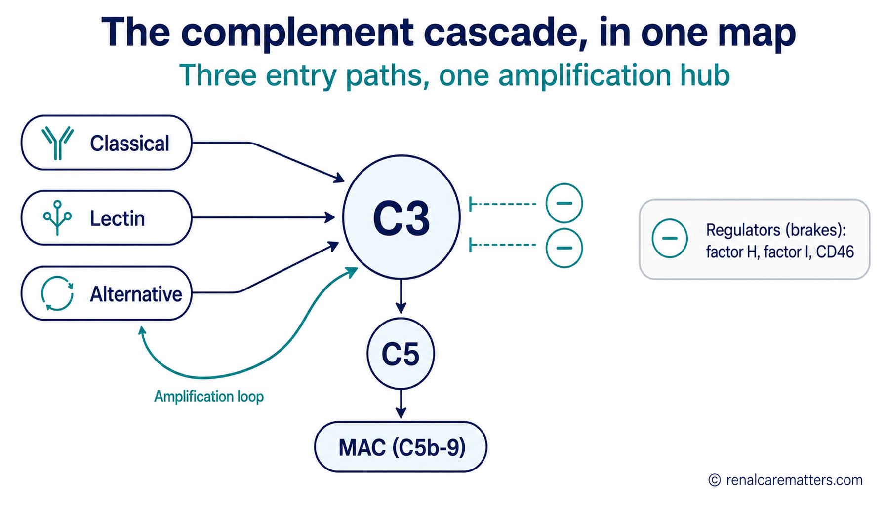

Emergency — signs of a thrombotic microangiopathy (TMA)Emergency — mga senyales ng thrombotic microangiopathy (TMA)Emergency — mga timailhan sa thrombotic microangiopathy (TMA)Emergency — reng senyales ning thrombotic microangiopathy (TMA)
Go to an emergency department now if you or someone you care for has new unexplained bruising or pinpoint red spots, paleness or yellowing (jaundice), passing much less urine, a severe headache, confusion, or a seizure — or any illness like this during pregnancy or soon after delivery, or with rapidly rising blood pressure. A thrombotic microangiopathy (TMA) can destroy red blood cells, drop the platelet count, and injure the kidney within hours. One dangerous form, thrombotic thrombocytopenic purpura (TTP), is treated immediately — the emergency team does not wait for complement or genetic tests to start treatment.Pumunta agad sa emergency department kung ikaw o ang inaalagaan mo ay may bagong hindi maipaliwanag na pasa o maliliit na pulang tuldok, pamumutla o paninilaw (jaundice), sobrang kaunting pag-ihi, matinding sakit ng ulo, pagkalito, o seizure — o anumang ganitong karamdaman habang buntis o kaagad pagkapanganak, o may mabilis na pagtaas ng presyon ng dugo. Ang thrombotic microangiopathy (TMA) ay maaaring sumira sa mga pulang selula ng dugo, magpababa ng bilang ng platelet, at makapinsala sa bato sa loob ng ilang oras. Isang mapanganib na anyo, ang thrombotic thrombocytopenic purpura (TTP), ay agad na ginagamot — hindi na naghihintay ang emergency team ng resulta ng complement o genetic tests bago magsimula ng paggamot.Adto dayon sa emergency department kung ikaw o ang imong giatiman adunay bag-o ug dili masabtan nga pasa o gagmayng pula nga tulbok, kaluspad o kadulaw (jaundice), hilabihan ka gamay nga pagpangihi, grabe nga labad sa ulo, kalibog, o seizure — o bisan unsang sakit nga sama niini samtang mabdos o wala madugay human manganak, o adunay paspas nga pagsaka sa presyon sa dugo. Ang thrombotic microangiopathy (TMA) makaguba sa pula nga mga selula sa dugo, makapaubos sa gidaghanon sa platelet, ug makadaot sa kidney sulod sa pipila ka oras. Usa ka delikadong porma, ang thrombotic thrombocytopenic purpura (TTP), gitambalan dayon — dili maghulat ang emergency team sa resulta sa complement o genetic tests una magsugod sa pagtambal.Ume kang agad king emergency department nung ika o ing metung a a-alagan mu atin bayung ali mesabing pasa o malating malutung tulduk, kaputlan o kadilawan (jaundice), makakaunting pamiyihi, masakit a buntuk, kalinguan, o seizure — o nanumang sakit a anti kaniti kapag mabuktut o kaibat mibait, o atin maganamganam a pamitas ning presion ning daya. Ing thrombotic microangiopathy (TMA) malyaring mika sira karing malutung selula ning daya, mika baba ng bilang ning platelet, at mika sakit king bato king lub ning mangapilang oras. Metung a delikadung anyu, ing thrombotic thrombocytopenic purpura (TTP), agad yang gagamutan — ali na maintayan ning emergency team ing resulta ning complement o genetic tests bayu la mangumpisa gamut.
If you take a complement blocker — fever is an emergencyKung umiinom ka ng complement blocker — ang lagnat ay emergencyKung nag-inom ka ug complement blocker — ang hilanat usa ka emergencyNung minum ka complement blocker — ing pasnu metung yang emergency
Complement blockers (eculizumab, ravulizumab, iptacopan, pegcetacoplan) make certain bacterial infections — especially meningitis and bloodstream infection (sepsis) — able to turn life-threatening very quickly, even after vaccination. If you have fever, severe headache, a stiff neck, dislike of light, confusion, a fast-spreading rash, or feel suddenly very ill, seek urgent care and say you are on a complement blocker. Do not wait for your next infusion or clinic visit.Ang mga complement blocker (eculizumab, ravulizumab, iptacopan, pegcetacoplan) ay ginagawang mabilis na nagiging nakamamatay ang ilang bacterial infection — lalo na ang meningitis at impeksyon sa dugo (sepsis) — kahit pagkatapos ng bakuna. Kung may lagnat, matinding sakit ng ulo, matigas na leeg, pagkailag sa liwanag, pagkalito, mabilis na kumakalat na pantal, o biglaang matinding pananamlay, humingi agad ng medikal na tulong at sabihing gumagamit ka ng complement blocker. Huwag hintayin ang susunod mong infusion o pagpapatingin sa klinika.Ang mga complement blocker (eculizumab, ravulizumab, iptacopan, pegcetacoplan) makahimo sa pipila ka bacterial infection — labi na ang meningitis ug impeksiyon sa dugo (sepsis) — nga makamatay dayon, bisan human sa bakuna. Kung ikaw adunay hilanat, grabe nga labad sa ulo, gahi nga liog, dili ganahan sa kahayag, kalibog, paspas nga mikaylap nga panuhot, o kalit nga grabe nga pagbati sa sakit, pangita dayon ug medikal nga tabang ug isulti nga naggamit ka ug complement blocker. Ayaw paghulat sa imong sunod nga infusion o pagpaklinika.Reng complement blocker (eculizumab, ravulizumab, iptacopan, pegcetacoplan) gagawan dang maganamganam a maging makamate reng aliwang bacterial infection — lalu na ing meningitis at impeksiyon king daya (sepsis) — agiang kaibat ning bakuna. Nung atin kang pasnu, masakit a buntuk, matigas a batal, e la buri ing sala, kalinguan, maganamganam a kakalat a pantal, o biglang masakit a pamaramdam, maintun kang agad kaduang medikal at sabian mung gagamit kang complement blocker. E me antayan ing tutuking infusion mu o pamagpatingin king klinika.
One immune system — several different diseases.Iisang immune system — iba't ibang sakit.Usa lang ka immune system — lain-laing sakit.Metung a immune system — miyayaliwang sakit.

One shared complement cascade branches two ways: on the left it deposits complement fragments in the kidney's filter wall (C3 glomerulopathy); on the right it injures the lining of small blood vessels, which then clot (complement-mediated TMA). Same cascade — different compartment, different disease. Educational illustration.
- C3
- Complement component 3 — the hub protein of the cascade
- TMA
- Thrombotic microangiopathy — injury and clotting in small blood vessels
"Complement-mediated kidney disease" is an umbrella term for a group of disorders — it is not a single diagnosis. Complement is part of your immune system. It normally helps fight infection and clear debris. It runs on a fast chemical chain reaction with built-in brakes. When those brakes fail or the chain over-runs, complement can damage the kidney — but it damages different parts of the kidney in different ways, and that is what separates one disease from another.Ang "complement-mediated kidney disease" ay isang payong na termino para sa isang grupo ng mga karamdaman — hindi ito iisang diagnosis. Ang complement ay bahagi ng iyong immune system. Karaniwan itong tumutulong labanan ang impeksyon at maglinis ng mga basura sa katawan. Umaandar ito sa mabilis na chemical chain reaction na may kasamang preno. Kapag pumalya ang mga prenong iyon o lumampas ang reaksyon, maaaring makapinsala ang complement sa bato — ngunit pinipinsala nito ang iba't ibang bahagi ng bato sa iba't ibang paraan, at iyon ang naghihiwalay sa isang sakit mula sa iba.Ang "complement-mediated kidney disease" usa ka payong nga termino para sa usa ka grupo sa mga sakit — dili kini usa lang ka diagnosis. Ang complement kabahin sa imong immune system. Kasagaran kini motabang pagpakig-away sa impeksiyon ug paglimpiyo sa mga basura sa lawas. Modagan kini sa paspas nga chemical chain reaction nga adunay preno. Kung mapakyas kadto nga preno o molapas ang reaksiyon, ang complement makadaot sa kidney — apan modaot kini sa lain-laing bahin sa kidney sa lain-laing paagi, ug mao kana ang nagbulag sa usa ka sakit gikan sa lain.Ing "complement-mediated kidney disease" metung yang payong a termino para king metung a grupu da reng sakit — ali ya metung a diagnosis. Ing complement kabage ne ning immune system mu. Karaniwan ya makatulung king pamaglaban king impeksiyon at pamaglinis da reng basura king katawan. Tatakbu ya king maganamganam a chemical chain reaction a atin prenu. Nung mika sala reng prenu a ita o milabas ing reaksiyon, malyaring mika sakit ing complement king bato — dapot sisiran na reng miyayaliwang dake ning bato king miyayaliwang paralan, at ita ing pamiyaliwa ning metung a sakit king aliwa.
Two archetypes anchor this guide. In C3 glomerulopathy (C3G), complement fragments build up in the kidney's tiny filters (the glomeruli), and the usual signs are blood and protein in the urine with a slowly changing kidney function. In complement-mediated thrombotic microangiopathy (CM-TMA) — historically called atypical hemolytic uremic syndrome (aHUS) — complement injures the lining of small blood vessels; red cells are shredded, platelets are consumed, and the kidney can fail quickly. A third pattern, primary immune-complex membranoproliferative glomerulonephritis (primary IC-MPGN), sits nearby and needs its own careful work-up. Depositing complement in a filter is genuinely not the same disease as injuring a blood-vessel lining, even though the same cascade is involved.Dalawang archetype ang nagsisilbing pundasyon ng gabay na ito. Sa C3 glomerulopathy (C3G), nag-iipon ang mga complement fragment sa maliliit na filter ng bato (ang glomeruli), at ang karaniwang senyales ay dugo at protina sa ihi kasama ang dahan-dahang pagbabago ng paggana ng bato. Sa complement-mediated thrombotic microangiopathy (CM-TMA) — dating tinatawag na atypical hemolytic uremic syndrome (aHUS) — pinipinsala ng complement ang lining ng maliliit na daluyan ng dugo; nadudurog ang mga pulang selula, nauubos ang platelet, at maaaring mabilis na mabigo ang bato. Ang ikatlong pattern, ang primary immune-complex membranoproliferative glomerulonephritis (primary IC-MPGN), ay malapit dito at nangangailangan ng sariling maingat na work-up. Ang pag-iipon ng complement sa isang filter ay tunay na hindi parehong sakit ng pagpinsala sa lining ng daluyan ng dugo, kahit pareho ang cascade na sangkot.Duha ka archetype ang sukaranan niini nga giya. Sa C3 glomerulopathy (C3G), motapok ang mga complement fragment sa gagmayng filter sa kidney (ang glomeruli), ug ang kasagaran nga timailhan mao ang dugo ug protina sa ihi uban sa hinay nga pag-usab sa gana sa kidney. Sa complement-mediated thrombotic microangiopathy (CM-TMA) — kaniadto gitawag ug atypical hemolytic uremic syndrome (aHUS) — modaot ang complement sa lining sa gagmayng ugat sa dugo; madugmok ang pula nga mga selula, mahurot ang platelet, ug ang kidney mahimong mapakyas dayon. Ang ikatulo nga pattern, ang primary immune-complex membranoproliferative glomerulonephritis (primary IC-MPGN), duol niini ug nagkinahanglan sa kaugalingong mabinantayong work-up. Ang pagtapok sa complement sa usa ka filter tinuod nga dili parehas nga sakit sa pagdaot sa lining sa ugat sa dugo, bisan parehas ang cascade nga naapil.Aduang archetype ing pundasyon ning giya a ini. King C3 glomerulopathy (C3G), tutubu la reng complement fragment karing malating filter ning bato (ing glomeruli), at ing karaniwang senyales daya at protina king ihi kayabe ing marimlang pamaglibad ning pamangan ning bato. King complement-mediated thrombotic microangiopathy (CM-TMA) — datiling ausan a atypical hemolytic uremic syndrome (aHUS) — sisiran ning complement ing lining da reng malating dalan ning daya; madurug la reng malutung selula, mauubus ing platelet, at malyaring maganamganam a masira ing bato. Ing katlung pattern, ing primary immune-complex membranoproliferative glomerulonephritis (primary IC-MPGN), malapit ya kaniti at kailangan na ing sariling maingat a work-up. Ing pamitipun complement king metung a filter tune yang ali parehung sakit ning pamaniran king lining ning dalan ning daya, agiang parehu ing cascade a kayabe.
The one idea to carry away: a low C3 blood test is a clue, not a diagnosis; a biopsy pattern is a starting point, not a cause; and a gene variant shows susceptibility, not destiny. Doctors name the phenotype (which compartment, which pattern) first, then look for the driver, then choose a target — and they build infection protection before any complement blocker is started.Ang isang ideyang dapat tandaan: ang mababang C3 sa dugo ay palatandaan, hindi diagnosis; ang pattern sa biopsy ay panimula, hindi sanhi; at ang gene variant ay nagpapakita ng pagkamaramdamin, hindi ng kapalaran. Una munang pinangalanan ng mga doktor ang phenotype (aling compartment, aling pattern), pagkatapos hinahanap ang driver, tapos pumipili ng target — at nagtatayo sila ng proteksyon laban sa impeksyon bago simulan ang anumang complement blocker.Ang usa ka ideya nga angay hinumdoman: ang ubos nga C3 sa dugo usa ka timailhan, dili diagnosis; ang pattern sa biopsy usa ka sinugdanan, dili hinungdan; ug ang gene variant nagpakita sa pagkadalidali madutlan, dili sa kapalaran. Ang mga doktor mag-una paghingalan sa phenotype (unsang compartment, unsang pattern), dayon mangita sa driver, dayon mopili ug target — ug motukod sila ug panalipod batok sa impeksiyon una magsugod ang bisan unsang complement blocker.Ing metung a ideya a dapat tandanan: ing mababang C3 king daya metung yang tanda, ali diagnosis; ing pattern king biopsy metung yang pamangumpisa, ali sangkan; at ing gene variant pakikit na ing pamikasakit, ali ing kapalaran. Muna reng doktor pemalaguan da ing phenotype (nung nanung compartment, nung nanung pattern), kaibat panintunan da ing driver, kaibat mamili lang target — at gagawa lang proteksiyon laban king impeksiyon bayu mumpisan ing nanumang complement blocker.
Where complement does its damage defines the disease.Ang lugar kung saan pumipinsala ang complement ang tumutukoy sa sakit.Ang dapit diin modaot ang complement maoy naghubit sa sakit.Ing lugal nung nu sisiran ing complement ing tutukduk king sakit.
The single most useful thing a patient or family can understand is which compartment is injured, because the urgency and the work-up are completely different.Ang pinakakapaki-pakinabang na maiintindihan ng isang pasyente o pamilya ay aling compartment ang napinsala, dahil ganap na magkaiba ang pagkaurgent at ang work-up.Ang labing mapuslanon nga masabtan sa usa ka pasyente o pamilya mao unsang compartment ang nadaot, tungod kay hingpit nga lahi ang pagkadinalian ug ang work-up.Ing pekamayap a aintindian ning metung a pasyente o pamilya nung nanung compartment ing mesira, uling lubus lang miyayaliwa ing pamikadalian at ing work-up.
C3 glomerulopathy (C3GN & dense deposit disease)C3 glomerulopathy (C3GN at dense deposit disease)C3 glomerulopathy (C3GN ug dense deposit disease)C3 glomerulopathy (C3GN ampo dense deposit disease)
Complement fragments settle inside the filter wall. The filters leak, so you see protein and blood in the urine, sometimes swelling and high blood pressure, and kidney function that usually changes over months to years.Naiipon ang mga complement fragment sa loob ng dingding ng filter. Tumatagas ang mga filter, kaya nakikita mo ang protina at dugo sa ihi, kung minsan pamamaga at mataas na presyon ng dugo, at paggana ng bato na karaniwang nagbabago sa loob ng buwan hanggang taon.Motapok ang mga complement fragment sulod sa bungbong sa filter. Motagas ang mga filter, mao nga makita nimo ang protina ug dugo sa ihi, usahay panghubag ug taas nga presyon sa dugo, ug gana sa kidney nga kasagaran mausab sulod sa mga bulan ngadto sa mga tuig.Tutubu la reng complement fragment king lub ning dinding ning filter. Tutuluy la reng filter, inya akakit mu ing protina at daya king ihi, minsan pamaniban at matas a presion ning daya, at pamangan ning bato a karaniwan malilibad king lub da reng bulan angga king banua.
Diagnosed on a kidney biopsy — not on a blood test alone.Nadadadiagnose sa pamamagitan ng kidney biopsy — hindi sa blood test lamang.Ma-diagnose pinaagi sa kidney biopsy — dili sa blood test lamang.Ma-diagnose ya king kidney biopsy — ali king blood test mu.
CM-TMA / aHUSCM-TMA / aHUSCM-TMA / aHUSCM-TMA / aHUS
Complement injures the lining of small vessels. Red cells break apart (anemia, sometimes jaundice), platelets fall (bruising), and the kidney can be injured within hours to days — a medical emergency.Pinipinsala ng complement ang lining ng maliliit na daluyan. Nagkakawatak-watak ang mga pulang selula (anemia, kung minsan jaundice), bumababa ang platelet (pagpapasa), at maaaring mapinsala ang bato sa loob ng ilang oras hanggang araw — isang medical emergency.Modaot ang complement sa lining sa gagmayng ugat. Mabungkag ang pula nga mga selula (anemia, usahay jaundice), mokunhod ang platelet (pagpasa), ug ang kidney mahimong madaot sulod sa mga oras ngadto sa mga adlaw — usa ka medical emergency.Sisiran ning complement ing lining da reng malating dalan. Mika sira-sira la reng malutung selula (anemia, minsan jaundice), bababa ing platelet (pamipasa), at malyaring masira ing bato king lub da reng oras angga king aldo — metung a medical emergency.
Recognized clinically and urgently; treatment is not delayed to wait for genetics.Nakikilala klinikal at agaran; hindi ipinagpapaliban ang paggamot para hintayin ang genetics.Mailhan klinikal ug dinalian; dili ipahulat ang pagtambal aron hulaton ang genetics.Makikilala klinikal at agad; ali ne ipagtagal ing gamut para antayan ing genetics.
Overlap & secondary causesOverlap at mga sekondaryong sanhiOverlap ug mga sekondaryang hinungdanOverlap ampo reng sekondaryung sangkan
Sometimes both compartments are involved, or another disease (infection, lupus, an abnormal protein, pregnancy, severe hypertension) is the real driver and complement is only amplifying the injury.Kung minsan, sangkot ang parehong compartment, o ibang sakit (impeksyon, lupus, abnormal na protina, pagbubuntis, matinding hypertension) ang tunay na driver at ang complement ay nagpapalala lamang sa pinsala.Usahay, apil ang duha ka compartment, o laing sakit (impeksiyon, lupus, abnormal nga protina, pagmabdos, grabe nga hypertension) ang tinuod nga driver ug ang complement nagpagrabe lamang sa kadaot.Minsan, kayabe la ring aduang compartment, o aliwang sakit (impeksiyon, lupus, abnormal a protina, pamagbuktut, grabing hypertension) ing tune driver at ing complement papalalan na mu ing sira.
This is why the work-up matters more than any single result.Ito ang dahilan kaya ang work-up ay mas mahalaga kaysa sa anumang iisang resulta.Mao kini ang hinungdan nga ang work-up mas importante kaysa sa bisan unsang usa ka resulta.Ini ing sangkan inya ing work-up mas maulaga kesa king nanumang metung a resulta.
A security system with an amplifier and brakes.Isang security system na may amplifier at mga preno.Usa ka security system nga adunay amplifier ug mga preno.Metung a security system a atin amplifier ampo reng prenu.
Think of complement as a building's security system. Sensors recognize microbes or damaged surfaces. An amplifier rapidly coats the target and calls in inflammation. A terminal response can punch holes in vulnerable membranes. And crucially, there are brakes and identity checks that protect your own healthy cells. Complement is not simply "bad inflammation" — it defends against infection, clears immune debris, and helps tissues repair. That is exactly why blocking it has a cost: it also changes how well you fight infection.Isipin ang complement bilang security system ng isang gusali. Ang sensor ay kumikilala ng mga mikrobyo o nasirang ibabaw. Ang amplifier ay mabilis na bumabalot sa target at tumatawag ng inflammation. Ang terminal response ay maaaring bumutas sa mahihinang membrane. At mahalagang-mahalaga, may preno at identity check na nagpoprotekta sa iyong sariling malulusog na selula. Hindi basta "masamang inflammation" lamang ang complement — ipinagtatanggol nito ang katawan laban sa impeksyon, nililinis ang immune debris, at tumutulong sa pag-ayos ng tissue. Iyan mismo ang dahilan kung bakit may kapalit ang pagharang dito: binabago rin nito kung gaano ka kahusay lumaban sa impeksyon.Hunahunaa ang complement isip security system sa usa ka building. Ang sensor moila sa mga mikrobyo o nadaot nga ibabaw. Ang amplifier paspas nga motabon sa target ug motawag sa inflammation. Ang terminal response makahimo ug mga lungag sa huyang nga membrane. Ug importante kaayo, adunay preno ug identity check nga manalipod sa imong kaugalingong himsog nga mga selula. Ang complement dili ba lang "daotan nga inflammation" — nanalipod kini batok sa impeksiyon, molimpiyo sa immune debris, ug motabang sa pag-ayo sa tissue. Mao gyud kana ang hinungdan nga adunay bayad ang pagbabag niini: mausab usab niini kung unsa ka maayo ka makig-away sa impeksiyon.Isipan me ing complement anti mo security system ning metung a gusali. Reng sensor makikilala lang mikrobyu o mesirang ibabo. Ing amplifier maganamganam yang babalut king target at aus na ing inflammation. Ing terminal response malyaring butasan na reng maluyang membrane. At maulaga, atin prenu at identity check a mamproteksiyun karing sarili mung masalese a selula. Ing complement ali ya mu "marok a inflammation" — dedepensan na ing katawan laban king impeksiyon, lilinisan na ing immune debris, at makatulung king pamanayus ning tissue. Ita mismu ing sangkan nung bakit atin bayad ing pamanharang kaniti: lilibad na mu naman nung makananu ka kayap lumaban king impeksiyon.
RecognizeKilalaninIlhonKilalan
Three entry pathways — classical, lectin, and alternative — detect antibodies, sugar patterns, or foreign/damaged surfaces.Tatlong entry pathway — classical, lectin, at alternative — ang tumutukoy ng antibody, pattern ng asukal, o dayuhan/nasirang ibabaw.Tulo ka entry pathway — classical, lectin, ug alternative — ang moila sa antibody, pattern sa asukal, o langyaw/nadaot nga ibabaw.Atlung entry pathway — classical, lectin, at alternative — ing tutukduk king antibody, pattern ning asukal, o dayong/mesirang ibabo.
Amplify at C3Palakasin sa C3Palig-onon sa C3Palakasan king C3
All three pathways converge on cutting C3. The "alternative pathway" then amplifies the signal in a fast loop. ("Alternative" is just its scientific name — it has nothing to do with alternative medicine.)Ang tatlong pathway ay nagtatagpo sa pagputol ng C3. Pagkatapos, pinalalakas ng "alternative pathway" ang senyales sa isang mabilis na loop. (Ang "alternative" ay pangalang siyentipiko lamang — walang kinalaman ito sa alternative medicine.)Ang tulo ka pathway magtagbo sa pagputol sa C3. Dayon, ang "alternative pathway" mopalig-on sa signal sa usa ka paspas nga loop. (Ang "alternative" ngalan lang nga siyentipiko — walay labot kini sa alternative medicine.)Reng atlung pathway mitatagpu la king pamanugtuk ning C3. Kaibat, papalakasan ning "alternative pathway" ing senyales king metung a maganamganam a loop. (Ing "alternative" lagyu ne mung siyentipiku — alang kaugnayan ya king alternative medicine.)
Tag & inflameTatak at inflameTag ug inflameTag ampo inflame
Fragments coat targets and release signals (C3a, C5a) that recruit inflammation.Bumabalot ang mga fragment sa mga target at naglalabas ng senyales (C3a, C5a) na naghihikayat ng inflammation.Motabon ang mga fragment sa mga target ug mopagawas ug signal (C3a, C5a) nga modani sa inflammation.Babalut la reng fragment karing target at mipapalwal lang senyales (C3a, C5a) a mangayakit king inflammation.
Terminal responseTerminal responseTerminal responseTerminal response
The membrane attack complex (MAC, also written C5b-9) can injure or activate cell membranes.Ang membrane attack complex (MAC, isinusulat ding C5b-9) ay maaaring makapinsala o mag-activate ng cell membrane.Ang membrane attack complex (MAC, gisulat usab nga C5b-9) makadaot o mag-activate sa cell membrane.Ing membrane attack complex (MAC, sisulat da mu naman a C5b-9) malyaring mika sakit o mag-activate king cell membrane.

The whole cascade in one map: three entry paths (classical, lectin, alternative) converge on C3; the alternative pathway feeds a fast amplification loop; the signal then passes to C5 (complement component 5) and the membrane attack complex. Regulator "brakes" (factor H, factor I, CD46) restrain the loop so it spares your own cells. Educational illustration.
- C3
- Complement component 3 — the hub the pathways converge on
- C5
- Complement component 5 — begins the terminal response
- MAC
- Membrane attack complex (C5b-9) — the terminal complement pore/activator
The brakes are regulator proteins — factor H, factor I, membrane cofactor protein (CD46), and others — that keep the amplifier from turning on your own tissues. In complement-mediated kidney disease, the problem is usually a failure of these brakes (from a gene change, an autoantibody, or an abnormal protein), not a lack of complement. The kidney is especially exposed because enormous volumes of blood are filtered across delicate vessel linings under high pressure, with relatively thin surface protection.Ang mga preno ay mga regulator na protina — factor H, factor I, membrane cofactor protein (CD46), at iba pa — na pumipigil sa amplifier na atakihin ang sarili mong tissue. Sa complement-mediated kidney disease, ang problema ay kadalasang pagpalya ng mga prenong ito (mula sa pagbabago ng gene, isang autoantibody, o abnormal na protina), hindi kakulangan ng complement. Lalong nakalantad ang bato dahil napakalaking dami ng dugo ang dinadaanan sa maninipis na lining ng daluyan sa ilalim ng mataas na presyon, na may manipis lamang na proteksyon sa ibabaw.Ang mga preno mga regulator nga protina — factor H, factor I, membrane cofactor protein (CD46), ug uban pa — nga mopugong sa amplifier gikan sa pag-atake sa imong kaugalingong tissue. Sa complement-mediated kidney disease, ang problema kasagaran mao ang pagkapakyas niini nga mga preno (gikan sa pag-usab sa gene, usa ka autoantibody, o abnormal nga protina), dili kakulang sa complement. Ang kidney labi nga naladlad tungod kay dako kaayo nga gidaghanon sa dugo ang gi-filter agi sa nipis nga lining sa ugat ubos sa taas nga presyon, nga adunay nipis lamang nga panalipod sa ibabaw.Reng prenu mga regulator a protina — factor H, factor I, membrane cofactor protein (CD46), at aliwa pa — a papatigilan da ing amplifier a atakan na reng sarili mung tissue. King complement-mediated kidney disease, ing problema karaniwan pamagsala da reng prenu a ini (ibat king pamaglibad ning gene, metung a autoantibody, o abnormal a protina), ali kakulangan ning complement. Lalu yang malantad ing bato uling maragul a dami ning daya ing dadalan king manipis a lining da reng dalan king lalam ning matas a presion, a atin manipis mung proteksiyun king ibabo.
Is complement the driver, an amplifier, or just a marker?Ang complement ba ay driver, amplifier, o marker lamang?Ang complement ba usa ka driver, amplifier, o marker lamang?Ing complement waris driver, amplifier, o marker mu?

A spectrum, not three boxes: in some kidney diseases complement dysregulation is the primary driver (C3G, CM-TMA); in others another disease starts the injury and complement amplifies it; in many, complement is simply present as a marker. Where a disease sits determines whether blocking complement is likely to help.
Complement is activated in many inflammatory kidney diseases. Finding complement — a low C3 in the blood, C3 staining on a biopsy, or a raised soluble C5b-9 — does not by itself prove that complement is the actionable cause or that a complement blocker will help. Clinicians use a three-level model:Na-a-activate ang complement sa maraming inflammatory kidney disease. Ang pagkakita ng complement — mababang C3 sa dugo, C3 staining sa biopsy, o mataas na soluble C5b-9 — ay hindi nagpapatunay nang mag-isa na ang complement ang naa-aksiyunang sanhi o na makakatulong ang complement blocker. Gumagamit ang mga kliniko ng modelong may tatlong antas:Ma-activate ang complement sa daghang inflammatory kidney disease. Ang pagkakita sa complement — ubos nga C3 sa dugo, C3 staining sa biopsy, o taas nga soluble C5b-9 — dili mag-inusara nga mopamatuod nga ang complement mao ang ma-aksiyonan nga hinungdan o nga makatabang ang complement blocker. Ang mga kliniko mogamit ug modelo nga tulo ka lebel:Ma-activate ing complement king dakal a inflammatory kidney disease. Ing pamanakit king complement — mababang C3 king daya, C3 staining king biopsy, o matas a soluble C5b-9 — ali na mu apatunayan a ing complement ing ma-aksiyunan a sangkan o a makatulung ing complement blocker. Reng kliniku gagamit lang modelu a atin atlung antas:
Myth vs. mechanism: "MPGN" is a pattern, not a diseaseAlamat vs. mekanismo: ang "MPGN" ay pattern, hindi sakitMito vs. mekanismo: ang "MPGN" usa ka pattern, dili sakitAlamat vs. mekanismo: ing "MPGN" metung yang pattern, ali sakit
Membranoproliferative glomerulonephritis (MPGN) is a picture a pathologist sees under the microscope — a pattern of injury. It is not a cause. The modern question is what is deposited and why: immune complexes, complement alone, an abnormal (monoclonal) protein, chronic infection, or complement dysregulation. So MPGN is a pattern, not a diagnosis — and it is a mistake to treat "MPGN" as if it automatically means C3G.Ang membranoproliferative glomerulonephritis (MPGN) ay isang larawan na nakikita ng pathologist sa mikroskopyo — isang pattern ng pinsala. Hindi ito sanhi. Ang makabagong tanong ay ano ang naiipon at bakit: immune complexes, complement lamang, abnormal (monoclonal) na protina, chronic infection, o complement dysregulation. Kaya ang MPGN ay pattern, hindi diagnosis — at pagkakamali na ituring ang "MPGN" na para bang automatic itong nangangahulugang C3G.Ang membranoproliferative glomerulonephritis (MPGN) usa ka hulagway nga makita sa pathologist sa mikroskopyo — usa ka pattern sa kadaot. Dili kini hinungdan. Ang moderno nga pangutana mao unsa ang natapok ug ngano: immune complexes, complement lamang, abnormal (monoclonal) nga protina, chronic infection, o complement dysregulation. Busa ang MPGN usa ka pattern, dili diagnosis — ug sayop nga tagdon ang "MPGN" nga daw automatiko kining nagpasabot ug C3G.Ing membranoproliferative glomerulonephritis (MPGN) metung yang larawan a akakit ning pathologist king mikroskopyu — metung a pattern ning sira. Ali ya sangkan. Ing modernung kutang nung nanu ing metipun at baket: immune complexes, complement mu, abnormal (monoclonal) a protina, chronic infection, o complement dysregulation. Inya ing MPGN metung yang pattern, ali diagnosis — at mali ing tuknangan ing "MPGN" a anti mong automatic yang buri sabian a C3G.
Reading the clues without over-reading them.Pagbasa sa mga palatandaan nang hindi lumalampas sa pagbasa.Pagbasa sa mga timailhan nga dili molabaw sa pagbasa.Pamamasa da reng tanda a e la milalabis king pamamasa.
Each test answers one narrow question. None of them, alone, makes the diagnosis. This table shows what a result can suggest, what it cannot prove, and what usually comes next.Ang bawat pagsusuri ay sumasagot sa isang tiyak na tanong. Wala sa kanila, nang mag-isa, ang gumagawa ng diagnosis. Ipinapakita ng talaang ito kung ano ang maaaring imungkahi ng isang resulta, kung ano ang hindi nito mapapatunayan, at kung ano ang karaniwang sumusunod.Ang matag pagsulay motubag sa usa ka piho nga pangutana. Wala kanila, mag-inusara, ang mohimo sa diagnosis. Kini nga talaan nagpakita kung unsa ang mahimong isugyot sa usa ka resulta, kung unsa ang dili niini mapamatud-an, ug kung unsa ang kasagaran mosunod.Ing balang pagsubuk mikibat ya king metung a espesipiku a kutang. Alang kanila, mag-isa, ing gagawa king diagnosis. Pakikit ning tala a ini nung nanu ing malyaring isuwesti ning metung a resulta, nung nanu ing e na apatunayan, at nung nanu ing karaniwan tutuki.
| ResultResultaResultaResulta | What it can suggestAno ang maaari nitong imungkahiUnsa ang mahimo niining isugyotNanu ing malyari niting isuwesti | What it cannot proveAno ang hindi nito mapapatunayanUnsa ang dili niini mapamatud-anNanu ing e niti apatunayan | Reasonable next stepMakatuwirang susunod na hakbangMakatarunganon nga sunod nga lakangMakatuking tutuking dapat |
|---|---|---|---|
| Low C3Mababang C3Ubos nga C3Mababang C3 | Complement is being consumed or activated somewhereMay complement na naubos o na-activate sa isang lugarAdunay complement nga nahurot o na-activate sa usa ka dapitAtin complement a mauubus o ma-activate king metung a lugal | That you have C3G or CM-TMA — a low C3 is a clue, not a diagnosisNa mayroon kang C3G o CM-TMA — ang mababang C3 ay palatandaan, hindi diagnosisNga ikaw adunay C3G o CM-TMA — ang ubos nga C3 usa ka timailhan, dili diagnosisA atin kang C3G o CM-TMA — ing mababang C3 metung yang tanda, ali diagnosis | Look at the whole clinical picture, C4 (a related complement protein), and a biopsy or other work-upTingnan ang buong klinikal na larawan, ang C4 (isang kaugnay na complement protein), at isang biopsy o iba pang work-upTan-awa ang tibuok klinikal nga hulagway, ang C4 (usa ka may kalabotan nga complement protein), ug usa ka biopsy o laing work-upLawen me ing mabilug a klinikal a larawan, ing C4 (metung a kaugnay a complement protein), at metung a biopsy o aliwang work-up |
| Normal C3Normal na C3Normal nga C3Normal a C3 | No major measurable drop in blood complementWalang malaking nasusukat na pagbaba sa complement ng dugoWalay dako nga masukod nga pagkunhod sa complement sa dugoAlang maragul a masukad a pamababa king complement ning daya | That complement disease is absent — a normal C3 does not rule it outNa walang complement disease — hindi ito pinawawalang-bisa ng normal na C3Nga walay complement disease — dili kini mapahawa sa normal nga C3A alang complement disease — ali ne pisawalang-bisa ning normal a C3 | Keep evaluating based on the phenotype, not the numberIpagpatuloy ang pagsusuri batay sa phenotype, hindi sa numeroPadayon sa pag-evaluate base sa phenotype, dili sa numeroItuluy ing pagsubuk base king phenotype, ali king numeru |
| C3-dominant biopsyC3-dominant na biopsyC3-dominant nga biopsyC3-dominant a biopsy | A C3-dominant category of glomerular diseaseIsang C3-dominant na kategorya ng glomerular diseaseUsa ka C3-dominant nga kategoriya sa glomerular diseaseMetung a C3-dominant a kategoriya ning glomerular disease | Primary C3G by itself — infection-related glomerulonephritis (GN) and hidden (masked) abnormal-protein deposits can also look C3-dominantPrimary C3G nang mag-isa — ang infection-related glomerulonephritis (GN) at nakatagong (masked) abnormal-protein deposits ay maaari ring magmukhang C3-dominantPrimary C3G mag-inusara — ang infection-related glomerulonephritis (GN) ug tinago (masked) nga abnormal-protein deposits mahimo usab nga makita nga C3-dominantPrimary C3G mag-isa — ing infection-related glomerulonephritis (GN) at makuyad (masked) a abnormal-protein deposits malyari lang mu naman a maging C3-dominant lawe | Exclude infection and monoclonal causes; add electron microscopy and complement work-upIbukod ang impeksyon at mga monoclonal na sanhi; magdagdag ng electron microscopy at complement work-upIlmain ang impeksiyon ug mga monoclonal nga hinungdan; dugangi ug electron microscopy ug complement work-upIlako ing impeksiyon at reng monoclonal a sangkan; dagdagan ing electron microscopy at complement work-up |
| MPGN patternMPGN patternMPGN patternMPGN pattern | A chronic pattern of filter injuryIsang chronic na pattern ng pinsala sa filterUsa ka chronic nga pattern sa kadaot sa filterMetung a chronic a pattern ning sira king filter | The cause of that injuryAng sanhi ng pinsalang iyonAng hinungdan niadto nga kadaotIng sangkan ning sira a ita | Immunofluorescence, electron microscopy, and a search for the underlying driverImmunofluorescence, electron microscopy, at paghahanap sa pinagbabatayang driverImmunofluorescence, electron microscopy, ug pagpangita sa nagpasukaranang driverImmunofluorescence, electron microscopy, at pamanintun king pun a driver |
| Raised soluble C5b-9Mataas na soluble C5b-9Taas nga soluble C5b-9Matas a soluble C5b-9 | Terminal complement activation in that sampleTerminal complement activation sa sample na iyonTerminal complement activation sa maong sampleTerminal complement activation king sample a ita | A specific disease or that a drug is workingIsang tiyak na sakit o na gumagana ang isang gamotUsa ka piho nga sakit o nga naglihok ang usa ka tambalMetung a espesipiku a sakit o a gagana ing metung a gamut | Interpret only with timing, handling, treatment, and phenotypeBigyang-kahulugan lamang kasama ang timing, paghawak, paggamot, at phenotypeHubara lamang uban sa timing, pagdumala, pagtambal, ug phenotypeIkahulugan mu mu la kayabe ing timing, pamanyaup, gamut, at phenotype |
| Pathogenic gene variantPathogenic gene variantPathogenic gene variantPathogenic gene variant | Inherited susceptibility; helps explain mechanismMinanang pagkamaramdamin; tumutulong ipaliwanag ang mekanismoNapanunod nga pagkadalidali madutlan; motabang pagpasabot sa mekanismoMinanang pamikasakit; makatulung ipaliwanag ing mekanismo | Certain penetrance or exactly how the disease will behaveTiyak na penetrance o kung paano eksaktong kikilos ang sakitSigurado nga penetrance o kung unsa gyud ang lihok sa sakitTiyak a penetrance o nung makananu eksaktu ing kikilos ing sakit | Genetic counseling; integrate with family and transplant planningGenetic counseling; isama sa pagpaplano ng pamilya at transplantGenetic counseling; iapil sa pagplano sa pamilya ug transplantGenetic counseling; iyabe king pamagplanu ning pamilya at transplant |
| Variant of uncertain significance (VUS)Variant of uncertain significance (VUS)Variant of uncertain significance (VUS)Variant of uncertain significance (VUS) | Current uncertainty — we do not yet know if it mattersKasalukuyang kawalang-katiyakan — hindi pa natin alam kung mahalaga itoKasamtangan nga kawalay-kasigurohan — wala pa kita masayod kung importante ba kiniKasalukuyang kawalang-katiyakan — e ta pa balu nung maulaga ya | A diagnosis, and it is not actionable on its ownIsang diagnosis, at hindi ito maaaksiyunan nang mag-isaUsa ka diagnosis, ug dili kini ma-aksiyonan mag-inusaraMetung a diagnosis, at ali ya ma-aksiyunan mag-isa | Expert review and possible re-analysis over timePagsusuri ng eksperto at posibleng muling pagsusuri sa paglipas ng panahonPag-review sa eksperto ug posibleng re-analysis sa paglabay sa panahonPamanlawe ning ekspertu at posibleng muling pamanuri king pamanlabas ning panaun |
Why the kidney biopsy needs three microscopes.Bakit kailangan ng kidney biopsy ang tatlong mikroskopyo.Ngano nagkinahanglan ang kidney biopsy ug tulo ka mikroskopyo.Baket kailangan ning kidney biopsy ing atlung mikroskopyu.

A kidney biopsy is read three ways. Light microscopy (LM) shows the pattern and scarring; immunofluorescence (IF) shows what is deposited (C3, antibodies, light chains); electron microscopy (EM) shows where the deposits sit and whether they are the dense, ribbon-like deposits of dense deposit disease. Each modality answers a different question. Educational illustration — not a real photomicrograph.
- LM
- Light microscopy — shows the injury pattern and chronicity
- IF
- Immunofluorescence — shows which immune proteins are deposited
- EM
- Electron microscopy — shows the location and character of deposits
To diagnose C3 glomerulopathy, a biopsy must be read by all three methods. Light microscopy (LM) shows the pattern of injury and how much scarring there is. Immunofluorescence (IF) shows what is deposited — and C3G is defined by C3 staining that clearly dominates over antibodies. Electron microscopy (EM) is what separates the two forms of C3G — dense deposit disease (DDD), with its highly dense, ribbon-like deposits inside the filter membrane, from C3 glomerulonephritis (C3GN). A blood test cannot do any of this: C3G is a biopsy diagnosis, and telling DDD from C3GN specifically requires electron microscopy.Upang ma-diagnose ang C3 glomerulopathy, kailangang basahin ang biopsy sa lahat ng tatlong paraan. Ipinapakita ng light microscopy (LM) ang pattern ng pinsala at kung gaano karaming pagpapaltos ang naroon. Ipinapakita ng immunofluorescence (IF) kung ano ang naiipon — at ang C3G ay tinutukoy ng C3 staining na malinaw na nangingibabaw sa mga antibody. Ang electron microscopy (EM) ang naghihiwalay sa dalawang anyo ng C3G — ang dense deposit disease (DDD), na may napakakapal, parang laso na deposito sa loob ng filter membrane, mula sa C3 glomerulonephritis (C3GN). Hindi ito magagawa ng blood test: ang C3G ay biopsy diagnosis, at ang pagkilala sa DDD mula sa C3GN ay partikular na nangangailangan ng electron microscopy.Aron ma-diagnose ang C3 glomerulopathy, kinahanglan basahon ang biopsy sa tanan tulo ka pamaagi. Ang light microscopy (LM) nagpakita sa pattern sa kadaot ug kung pila ka scarring ang anaa. Ang immunofluorescence (IF) nagpakita kung unsa ang natapok — ug ang C3G gihubit sa C3 staining nga tin-aw nga molabaw sa mga antibody. Ang electron microscopy (EM) maoy nagbulag sa duha ka porma sa C3G — ang dense deposit disease (DDD), nga adunay baga kaayo, sama-ribbon nga deposits sulod sa filter membrane, gikan sa C3 glomerulonephritis (C3GN). Dili kini mahimo sa blood test: ang C3G usa ka biopsy diagnosis, ug ang pag-ila sa DDD gikan sa C3GN piho nga nagkinahanglan ug electron microscopy.Ban ma-diagnose ing C3 glomerulopathy, kailangan yang basan ing biopsy king anggang atlung paralan. Pakikit ning light microscopy (LM) ing pattern ning sira at nung makananu karakal a scarring ing atyu. Pakikit ning immunofluorescence (IF) nung nanu ing metipun — at ing C3G tutukduk ne ning C3 staining a malino yang mangibabo karing antibody. Ing electron microscopy (EM) ing mamiyaliwa karing aduang anyu ning C3G — ing dense deposit disease (DDD), a atin makapal, anti-laso a deposito king lub ning filter membrane, ibat king C3 glomerulonephritis (C3GN). Ali ne agawa ning blood test: ing C3G metung yang biopsy diagnosis, at ing pamikilala king DDD ibat king C3GN espesipiku yang kailangan ing electron microscopy.
Genes describe susceptibility — not destiny.Inilalarawan ng mga gene ang pagkamaramdamin — hindi ang kapalaran.Ang mga gene naghulagway sa pagkadalidali madutlan — dili sa kapalaran.Delarawan da reng gene ing pamikasakit — ali ing kapalaran.

Genetics shifts the odds; it does not fix the outcome. A susceptibility variant, plus a trigger, plus each person's regulatory and tissue context, can lead to different outcomes — some people develop disease and some never do. This is incomplete penetrance. Educational illustration.
- VUS
- Variant of uncertain significance — a gene change whose meaning is not yet known
Genetic testing and complement autoantibody testing can genuinely help — clarifying mechanism, estimating the chance a disease will come back after a transplant, and guiding family counseling. But genetics informs risk; it does not deliver certainty. Penetrance is incomplete (a variant does not always cause disease), the same variant can behave differently in different people, and common "risk" gene versions are not deterministic. Three honest limits matter most:Ang genetic testing at complement autoantibody testing ay tunay na makakatulong — nililinaw ang mekanismo, tinatantya ang tsansang babalik ang sakit pagkatapos ng transplant, at ginagabayan ang family counseling. Ngunit ang genetics ay nagbibigay-alam ng panganib; hindi ito nagbibigay ng katiyakan. Hindi kumpleto ang penetrance (hindi palaging nagdudulot ng sakit ang isang variant), maaaring kumilos nang iba ang parehong variant sa iba't ibang tao, at hindi deterministic ang karaniwang "risk" na mga bersyon ng gene. Tatlong tapat na limitasyon ang pinakamahalaga:Ang genetic testing ug complement autoantibody testing tinuod nga makatabang — magpatin-aw sa mekanismo, mag-banabana sa kahigayonan nga mobalik ang sakit human sa transplant, ug moggiya sa family counseling. Apan ang genetics naghatag ug kasayoran sa risk; dili kini maghatag ug kasigurohan. Ang penetrance dili kompleto (dili kanunay nga ang variant maoy hinungdan sa sakit), ang parehas nga variant mahimong molihok nga lahi sa lain-laing tawo, ug ang komon nga "risk" nga mga bersiyon sa gene dili deterministic. Tulo ka tinuod nga limitasyon ang labing importante:Ing genetic testing at complement autoantibody testing tune lang makatulung — lilinawan ing mekanismo, tatantiyan ing tsansang mibalik ing sakit kaibat ning transplant, at gagabayan ing family counseling. Dapot ing genetics mibie yang balita king panganib; ali ya mibie king katiyakan. Ali kumpletu ing penetrance (ali pane mika sakit ing metung a variant), malyaring kumilos yang aliwa ing parehung variant karing miyayaliwang tau, at ali deterministic ing karaniwan a "risk" a mga bersiyon ning gene. Atlung tapat a limitasyon ing pekamaulaga:
- A variant of uncertain significance (VUS) is not actionable on its own — it must not be used to diagnose disease, to start or stop a complement blocker, or to deny anyone a transplant.Ang isang variant of uncertain significance (VUS) ay hindi maaaksiyunan nang mag-isa — hindi ito dapat gamitin para mag-diagnose ng sakit, para magsimula o magtigil ng complement blocker, o para tanggihan ang sinuman sa transplant.Ang usa ka variant of uncertain significance (VUS) dili ma-aksiyonan mag-inusara — dili kini angay gamiton aron mag-diagnose sa sakit, aron magsugod o mohunong sa complement blocker, o aron balibaran si bisan kinsa sa transplant.Ing metung a variant of uncertain significance (VUS) ali ya ma-aksiyunan mag-isa — ali ya dapat gamitan ban mag-diagnose sakit, ban mumpisan o patiguilan ing complement blocker, o ban tanggian ing ninuman king transplant.
- A negative gene panel does not rule the disease out — many people with genuine complement disease have no detectable variant.Ang negatibong gene panel ay hindi pinawawalang-bisa ang sakit — maraming taong may tunay na complement disease ang walang matukoy na variant.Ang negatibo nga gene panel dili mopahawa sa sakit — daghang tawo nga adunay tinuod nga complement disease ang walay matukib nga variant.Ing negatibung gene panel ali na pisawalang-bisa ing sakit — dakal a tau a atin tune complement disease ing alang matukduk a variant.
- Results need expert interpretation with the clinical picture, and a classification can change if the variant is re-analyzed years later.Ang mga resulta ay nangangailangan ng interpretasyon ng eksperto kasama ang klinikal na larawan, at maaaring magbago ang klasipikasyon kung muling susuriin ang variant makalipas ang mga taon.Ang mga resulta nagkinahanglan ug interpretasyon sa eksperto uban sa klinikal nga hulagway, ug ang klasipikasyon mahimong mausab kung i-re-analyze ang variant paglabay sa mga tuig.Reng resulta kailangan da ing interpretasyon ning ekspertu kayabe ing klinikal a larawan, at malyaring malibad ing klasipikasyon nung muling suryan ing variant kaibat da reng banua.
Relatives should be tested only through genetic counseling and only when there is a defined family question — not through a website or a curiosity check.Ang mga kamag-anak ay dapat suriin lamang sa pamamagitan ng genetic counseling at kapag may tiyak na tanong ng pamilya — hindi sa pamamagitan ng website o dahil sa pagkamausisa.Ang mga paryente angay sulayan lamang pinaagi sa genetic counseling ug kung adunay tino nga pangutana sa pamilya — dili pinaagi sa website o tungod sa pagkamausisaon.Reng kamaganak dapat la mu suryan king genetic counseling at nung atin tiyak a kutang ning pamilya — ali king website o uling king pamikausisa.
Real progress — and what it does not yet prove.Tunay na pag-unlad — at kung ano ang hindi pa nito napapatunayan.Tinuod nga pag-uswag — ug kung unsa ang wala pa niini mapamatud-i.Tune pamanlual — at nung nanu ing e na pa apatunayan.
Between them, the diseases in this guide finally have targeted, trial-tested treatments. That is a genuine advance. But it is just as important to understand the limits of what the trials showed, because that is where patients are most often misled.Sa kabuuan, ang mga sakit sa gabay na ito ay may targeted, trial-tested na paggamot na sa wakas. Iyon ay tunay na pagsulong. Ngunit kasinghalaga ring maunawaan ang mga limitasyon ng ipinakita ng mga trial, dahil doon madalas malinlang ang mga pasyente.Sa kinatibuk-an, ang mga sakit niini nga giya sa katapusan adunay targeted, trial-tested nga pagtambal. Kana usa ka tinuod nga pag-uswag. Apan sama ka importante nga masabtan ang mga limitasyon sa gipakita sa mga trial, tungod kay didto kasagaran malimbongan ang mga pasyente.King kabilugan, reng sakit king giya a ini atin na targeted, trial-tested a gamut king wakas. Ita metung yang tune pamanlual. Dapot kasinghalaga mu naman a aintindian reng limitasyon na ning pepakit da reng trial, uling karin pane malilinlang reng pasyente.
Supportive kidney care remains the foundation, with or without targeted therapy: controlling blood pressure and protein loss (usually with an ACE inhibitor or ARB), managing fluid and cholesterol, treating infections, avoiding kidney-toxic drugs, and planning ahead for kidney failure. Supportive care is never "doing nothing" — it protects the kidney while other decisions are made.Ang supportive kidney care ay nananatiling pundasyon, mayroon man o walang targeted therapy: pagkontrol sa presyon ng dugo at pagkawala ng protina (kadalasan sa ACE inhibitor o ARB), pamamahala sa likido at kolesterol, paggamot sa mga impeksyon, pag-iwas sa mga gamot na nakakalason sa bato, at pagpaplano nang maaga para sa kidney failure. Ang supportive care ay hindi kailanman "walang ginagawa" — pinoprotektahan nito ang bato habang ginagawa ang ibang desisyon.Ang supportive kidney care nagpabilin nga pundasyon, adunay man o walay targeted therapy: pagkontrol sa presyon sa dugo ug pagkawala sa protina (kasagaran sa ACE inhibitor o ARB), pagdumala sa likido ug kolesterol, pagtambal sa mga impeksiyon, paglikay sa mga tambal nga makahilo sa kidney, ug pagplano daan alang sa kidney failure. Ang supportive care dili gyud "walay gibuhat" — panalipdan niini ang kidney samtang gihimo ang laing mga desisyon.Ing supportive kidney care manatili yang pundasyon, atin man o alang targeted therapy: pamagkontrol king presion ning daya at pamikawala ning protina (karaniwan king ACE inhibitor o ARB), pamamahala king likido at kolesterol, gamut da reng impeksiyon, pamiglikas karing gamut a makalasun king bato, at pamagplanu nang maaga para king kidney failure. Ing supportive care e ya kailanman "alang gagawan" — pipruteksiunan ne ing bato kabang gagawan da reng aliwang desisyon.
Iptacopan (APPEAR-C3G) — for C3 glomerulopathyIptacopan (APPEAR-C3G) — para sa C3 glomerulopathyIptacopan (APPEAR-C3G) — para sa C3 glomerulopathyIptacopan (APPEAR-C3G) — para king C3 glomerulopathy
Iptacopan is an oral drug that blocks factor B, dampening the alternative-pathway amplifier. In a randomized, placebo-controlled phase 3 trial of 74 adults with biopsy-confirmed C3G, iptacopan reduced urine protein (UPCR) by about 35% versus placebo at 6 months, an effect maintained to 12 months. The U.S. Food and Drug Administration (FDA) approved it on 20 March 2025, for adults with C3G, to reduce proteinuria.Ang iptacopan ay oral na gamot na humaharang sa factor B, na nagpapahina sa alternative-pathway amplifier. Sa isang randomized, placebo-controlled phase 3 trial ng 74 na adulto na may biopsy-confirmed na C3G, binawasan ng iptacopan ang protina sa ihi (UPCR) ng humigit-kumulang 35% versus placebo sa 6 na buwan, isang epektong napanatili hanggang 12 buwan. Inaprubahan ito ng U.S. Food and Drug Administration (FDA) noong 20 March 2025, para sa mga adulto na may C3G, upang bawasan ang proteinuria.Ang iptacopan usa ka oral nga tambal nga mobabag sa factor B, nga mopahuyang sa alternative-pathway amplifier. Sa usa ka randomized, placebo-controlled phase 3 trial sa 74 ka hamtong nga adunay biopsy-confirmed nga C3G, gipakunhod sa iptacopan ang protina sa ihi (UPCR) ug mga 35% versus placebo sa 6 ka bulan, usa ka epekto nga napabilin hangtod 12 ka bulan. Giaprobahan kini sa U.S. Food and Drug Administration (FDA) niadtong 20 March 2025, alang sa mga hamtong nga adunay C3G, aron makunhod ang proteinuria.Ing iptacopan metung yang oral a gamut a haharang king factor B, a papaluyan na ing alternative-pathway amplifier. King metung a randomized, placebo-controlled phase 3 trial da reng 74 a adultu a atin biopsy-confirmed a C3G, binawas ne ning iptacopan ing protina king ihi (UPCR) king manga 35% versus placebo king 6 a bulan, metung a epektu a metagan angga king 12 bulan. Inaprubahan de ning U.S. Food and Drug Administration (FDA) inyang 20 March 2025, para karing adultu a atin C3G, ban baba ing proteinuria.
What it does not yet prove: the main result is a proteinuria (surrogate) endpoint over a short randomized period. A drop in urine protein is meaningful, but it has not yet been shown to prevent long-term kidney failure. There is no proof for children or, from this trial, for transplant recipients.Ang hindi pa nito napapatunayan: ang pangunahing resulta ay isang proteinuria (surrogate) endpoint sa maikling randomized na panahon. Makabuluhan ang pagbaba ng protina sa ihi, ngunit hindi pa ito naipapakitang pumipigil sa long-term kidney failure. Walang katibayan para sa mga bata o, mula sa trial na ito, para sa mga transplant recipient.Ang wala pa niini mapamatud-i: ang nag-unang resulta usa ka proteinuria (surrogate) endpoint sa mubo nga randomized nga panahon. Mahinungdanon ang pagkunhod sa protina sa ihi, apan wala pa kini mapakita nga makapugong sa long-term kidney failure. Walay pamatuod alang sa mga bata o, gikan niini nga trial, alang sa mga transplant recipient.Ing e na pa apatunayan: ing pekamaragul a resulta metung yang proteinuria (surrogate) endpoint king makuyad a randomized a panaun. Maulaga ing pamababa ning protina king ihi, dapot e na pa pepakit a pipatiguilan na ing long-term kidney failure. Alang patutu para karing anak o, ibat king trial a ini, para karing transplant recipient.
Pegcetacoplan (VALIANT) — for C3G and primary IC-MPGNPegcetacoplan (VALIANT) — para sa C3G at primary IC-MPGNPegcetacoplan (VALIANT) — para sa C3G ug primary IC-MPGNPegcetacoplan (VALIANT) — para king C3G at primary IC-MPGN
Pegcetacoplan is an injected drug that blocks C3/C3b more proximally. In a randomized, placebo-controlled phase 3 trial of 124 people aged 12 and older with C3G or primary IC-MPGN, it reduced urine protein by about 68% versus placebo at 26 weeks and stabilized kidney function. The U.S. FDA approved it on 28 July 2025, for patients aged 12 and older with C3G or primary IC-MPGN, to reduce proteinuria.Ang pegcetacoplan ay iniinjek na gamot na humaharang sa C3/C3b nang mas proximal. Sa isang randomized, placebo-controlled phase 3 trial ng 124 na tao na 12 taong gulang pataas na may C3G o primary IC-MPGN, binawasan nito ang protina sa ihi ng humigit-kumulang 68% versus placebo sa 26 na linggo at pinatatag ang paggana ng bato. Inaprubahan ito ng U.S. FDA noong 28 July 2025, para sa mga pasyenteng 12 taong gulang pataas na may C3G o primary IC-MPGN, upang bawasan ang proteinuria.Ang pegcetacoplan usa ka gi-inject nga tambal nga mobabag sa C3/C3b nga mas proximal. Sa usa ka randomized, placebo-controlled phase 3 trial sa 124 ka tawo nga 12 anyos pataas nga adunay C3G o primary IC-MPGN, gipakunhod niini ang protina sa ihi ug mga 68% versus placebo sa 26 ka semana ug gipalig-on ang gana sa kidney. Giaprobahan kini sa U.S. FDA niadtong 28 July 2025, alang sa mga pasyente nga 12 anyos pataas nga adunay C3G o primary IC-MPGN, aron makunhod ang proteinuria.Ing pegcetacoplan metung yang i-inject a gamut a haharang king C3/C3b a mas proximal. King metung a randomized, placebo-controlled phase 3 trial da reng 124 a tau a 12 banua paitas a atin C3G o primary IC-MPGN, binawas ne ning protina king ihi king manga 68% versus placebo king 26 a dominggu at pepatatag ne ing pamangan ning bato. Inaprubahan de ning U.S. FDA inyang 28 July 2025, para karing pasyente a 12 banua paitas a atin C3G o primary IC-MPGN, ban baba ing proteinuria.
What it does not yet prove: again a 26-week proteinuria-centered result. Only a small number of transplant-recurrence patients were included, so that subgroup is uncertain. Long-term kidney survival, the best duration, and how it compares head-to-head with other options are all still unknown.Ang hindi pa nito napapatunayan: muli, isang 26-linggong resultang nakasentro sa proteinuria. Kakaunting bilang lamang ng transplant-recurrence na pasyente ang kasama, kaya hindi tiyak ang subgroup na iyon. Ang long-term kidney survival, ang pinakamahusay na tagal, at kung paano ito ihinahambing nang head-to-head sa ibang opsyon ay hindi pa alam.Ang wala pa niini mapamatud-i: usab usa ka 26-ka-semana nga resulta nga nakasentro sa proteinuria. Gamay lang nga gidaghanon sa transplant-recurrence nga pasyente ang naapil, mao nga dili sigurado kana nga subgroup. Ang long-term kidney survival, ang pinakamaayong gidugayon, ug kung unsaon kini pagtandi head-to-head sa laing mga kapilian wala pa masayri.Ing e na pa apatunayan: pasibayu, metung a 26-dominggung resulta a nakasentru king proteinuria. Makakaunting bilang mu da reng transplant-recurrence a pasyente ing mekayabe, inya ali tiyak ing subgroup a ita. Ing long-term kidney survival, ing pekayap a tagal, at nung makananu ne ihahambing head-to-head karing aliwang opsiyon e la pa balu.
Eculizumab & ravulizumab — C5 blockers for CM-TMA / aHUSEculizumab at ravulizumab — mga C5 blocker para sa CM-TMA / aHUSEculizumab ug ravulizumab — mga C5 blocker para sa CM-TMA / aHUSEculizumab ampo ravulizumab — reng C5 blocker para king CM-TMA / aHUS
For complement-mediated TMA, blocking C5 (the terminal step) has been transformative. Eculizumab and ravulizumab improve blood counts and kidney recovery, and starting treatment early is associated with better kidney recovery. These drugs are established, approved therapies for aHUS in many countries.Para sa complement-mediated TMA, ang pagharang sa C5 (ang terminal na hakbang) ay naging transformative. Pinapabuti ng eculizumab at ravulizumab ang blood counts at kidney recovery, at ang pagsisimula ng paggamot nang maaga ay nauugnay sa mas mahusay na kidney recovery. Ang mga gamot na ito ay itinatag, aprubadong therapy para sa aHUS sa maraming bansa.Alang sa complement-mediated TMA, ang pagbabag sa C5 (ang terminal nga lakang) nahimong transformative. Ang eculizumab ug ravulizumab mopalambo sa blood counts ug kidney recovery, ug ang pagsugod sa pagtambal nga sayo nalambigit sa mas maayong kidney recovery. Kini nga mga tambal natukod, giaprobahan nga therapy alang sa aHUS sa daghang nasod.Para king complement-mediated TMA, ing pamanharang king C5 (ing terminal a dapat) meging transformative ya. Papayapan da ning eculizumab at ravulizumab ing blood counts at kidney recovery, at ing pamangumpisa gamut a maaga maugnay ya king mas mayap a kidney recovery. Deng gamut a reni metatag, aprubadung therapy para king aHUS king dakal a bangsa.
An honest caveat: because aHUS is rare and severe, the evidence comes from prospective single-arm trials and registries, not randomized placebo-controlled trials. The benefit is well supported by the biology and by recovery after early treatment, but questions about which drug, how long, and which subgroups remain less certain. For C3G specifically, C5 blockade is not an approved or proven standard therapy.Isang tapat na paalala: dahil bihira at malubha ang aHUS, ang ebidensya ay nagmumula sa prospective single-arm trials at registries, hindi sa randomized placebo-controlled trials. Malakas na sinusuportahan ang benepisyo ng biology at ng pagbawi pagkatapos ng maagang paggamot, ngunit ang mga tanong kung aling gamot, gaano katagal, at aling subgroup ay nananatiling hindi gaanong tiyak. Para sa C3G partikular, ang C5 blockade ay hindi aprubado o napatunayang standard therapy.Usa ka tinuod nga pahimangno: tungod kay talagsaon ug grabe ang aHUS, ang ebidensiya gikan sa prospective single-arm trials ug registries, dili gikan sa randomized placebo-controlled trials. Ang benepisyo maayong gisuportahan sa biology ug sa pagkaayo human sa sayo nga pagtambal, apan ang mga pangutana kung unsang tambal, unsa ka dugay, ug unsang subgroup nagpabilin nga dili kaayo sigurado. Alang sa C3G ilabina, ang C5 blockade dili giaprobahan o napamatud-ang standard therapy.Metung a tapat a pasabi: uling malagu at grabe ing aHUS, ing ebidensya ibat ya karing prospective single-arm trials ampo registries, ali karing randomized placebo-controlled trials. Masikan yang sinusuportan ing benepisyu ning biology at ning pamanumbalik kaibat ning maaga a gamut, dapot reng kutang nung nanung gamut, makananu katagal, at nung nanung subgroup manatili lang ali masyadung tiyak. Para king C3G espesipiku, ing C5 blockade ali ya aprubadu o mepatunayan a standard therapy.
Guidelines have a date on themAng mga guideline ay may petsaAng mga guideline adunay petsaReng guideline atin lang petsa
The most recent published Kidney Disease: Improving Global Outcomes (KDIGO) glomerular-disease guideline (2021) suggested mycophenolate plus steroids for moderate-to-severe C3G, and it predates the 2025 iptacopan and pegcetacoplan trials and approvals. Its advice was based mostly on observational data. A separate KDIGO conference on complement diseases was held in 2026, but a conference is not a guideline — its formal recommendations do not exist until the peer-reviewed report is published. Any treatment plan needs current specialist interpretation.Ang pinakahuling nailathalang Kidney Disease: Improving Global Outcomes (KDIGO) glomerular-disease guideline (2021) ay nagmungkahi ng mycophenolate kasama ang steroids para sa moderate-to-severe C3G, at ito ay nauna sa 2025 iptacopan at pegcetacoplan trials at mga pag-apruba. Ang payo nito ay pangunahing nakabatay sa observational data. Isang hiwalay na KDIGO conference sa complement diseases ang idinaos noong 2026, ngunit ang isang conference ay hindi guideline — hindi umiiral ang pormal nitong mga rekomendasyon hangga't hindi nailalathala ang peer-reviewed na ulat. Anumang treatment plan ay nangangailangan ng kasalukuyang interpretasyon ng espesyalista.Ang pinakabag-ong napatik nga Kidney Disease: Improving Global Outcomes (KDIGO) glomerular-disease guideline (2021) misugyot ug mycophenolate uban sa steroids alang sa moderate-to-severe C3G, ug kini nag-una sa 2025 iptacopan ug pegcetacoplan trials ug mga pag-aprobar. Ang tambag niini kasagaran gibase sa observational data. Usa ka bulag nga KDIGO conference bahin sa complement diseases ang gihimo niadtong 2026, apan ang usa ka conference dili guideline — ang pormal niini nga mga rekomendasyon wala molungtad hangtod nga mapatik ang peer-reviewed nga taho. Bisan unsang treatment plan nagkinahanglan ug karon nga interpretasyon sa espesyalista.Ing pekabayung mepalual a Kidney Disease: Improving Global Outcomes (KDIGO) glomerular-disease guideline (2021) sinuwesti yang mycophenolate kayabe reng steroids para king moderate-to-severe C3G, at ini minuna ya karing 2025 iptacopan at pegcetacoplan trials at reng pag-aprubar. Ing payu na base ya keng dakal king observational data. Metung a hiwalay a KDIGO conference king complement diseases ing megawa inyang 2026, dapot ing metung a conference ali ya guideline — ali la atyu reng pormal nang rekomendasyon anggang e mepalual ing peer-reviewed a report. Nanumang treatment plan kailangan na ing kasalukuyang interpretasyon ning espesyalista.
A complement blocker changes how you fight infection.Binabago ng complement blocker kung paano ka lumaban sa impeksyon.Ang complement blocker mausab kung unsaon nimo pagpakig-away sa impeksiyon.Lilibad ne ning complement blocker nung makananu ka lumaban king impeksiyon.

Complement blockade is paired with a safety system, not started alone: vaccination, an emergency card to show any clinician, a plan to treat fever urgently, direct care-team contact, and ongoing monitoring. The shield reduces risk — it does not remove it. Educational illustration.
Because complement helps kill certain bacteria — especially the "encapsulated" ones like meningococcus, pneumococcus, and Haemophilus influenzae — blocking it raises the risk of severe, fast-moving infections. This is not an administrative checkbox; it is part of the treatment itself. Before and during complement blockade, the plan should include:Dahil tumutulong ang complement na patayin ang ilang bakterya — lalo na ang mga "encapsulated" tulad ng meningococcus, pneumococcus, at Haemophilus influenzae — ang pagharang dito ay nagtataas ng panganib ng malubha at mabilis na kumakalat na impeksyon. Hindi ito isang administrative checkbox; ito ay bahagi mismo ng paggamot. Bago at habang may complement blockade, dapat kasama sa plano ang:Tungod kay ang complement motabang pagpatay sa pipila ka bakterya — labi na ang mga "encapsulated" sama sa meningococcus, pneumococcus, ug Haemophilus influenzae — ang pagbabag niini mopataas sa risk sa grabe, paspas nga mikaylap nga impeksiyon. Dili kini usa ka administrative checkbox; kabahin kini sa pagtambal mismo. Una ug samtang adunay complement blockade, ang plano angay maglakip sa:Uling makatulung ing complement a patayan reng aliwang bakterya — lalu na reng "encapsulated" anti mo meningococcus, pneumococcus, at Haemophilus influenzae — ing pamanharang kaniti mitas na ing panganib ning grabe, maganamganam a kakalat a impeksiyon. Ali ya ini metung a administrative checkbox; kabage ya mismu ning gamut. Bayu at kabang atin complement blockade, dapat kayabe king planu ing:
- Vaccination against meningococcus (ACWY and B), pneumococcus, and Haemophilus, timed to the drug's label and national guidance;Bakuna laban sa meningococcus (ACWY at B), pneumococcus, at Haemophilus, na naka-oras ayon sa label ng gamot at pambansang gabay;Bakuna batok sa meningococcus (ACWY ug B), pneumococcus, ug Haemophilus, gitakda base sa label sa tambal ug nasudnong giya;Bakuna laban king meningococcus (ACWY at B), pneumococcus, at Haemophilus, a naka-oras agpang king label ning gamut at pambangsang giya;
- Preventive antibiotics when the label or local protocol requires them — especially if treatment must start before vaccines can take full effect;Preventive antibiotics kapag hinihingi ng label o lokal na protocol — lalo na kung kailangang magsimula ang paggamot bago magkaroon ng ganap na epekto ang mga bakuna;Preventive antibiotics kung gikinahanglan sa label o lokal nga protocol — labi na kung kinahanglan magsugod ang pagtambal una molihok bug-os ang mga bakuna;Preventive antibiotics nung kailangan ne ning label o lokal a protocol — lalu na nung kailangan mangumpisa ing gamut bayu mika lubus a epektu reng bakuna;
- An emergency card you carry, and a clear plan to seek urgent care for fever;Isang emergency card na dala-dala mo, at isang malinaw na plano na humingi ng urgent care para sa lagnat;Usa ka emergency card nga dala nimo, ug usa ka tin-aw nga plano nga mangita ug urgent care alang sa hilanat;Metung a emergency card a dala-dala mu, at metung a malinaw a planu a maintun urgent care para king pasnu;
- A named contact on your care team and a working link to emergency services and to your primary doctor.Isang tukoy na kontak sa iyong care team at isang gumaganang koneksyon sa emergency services at sa iyong primary doctor.Usa ka nginanlan nga kontak sa imong care team ug usa ka molihok nga koneksiyon sa emergency services ug sa imong primary doctor.Metung a nginan a kontak king care team mu at metung a gaganang koneksiyon king emergency services at king primary doctor mu.
Vaccination lowers the risk — it does not remove itBinababa ng bakuna ang panganib — hindi ito inaalisAng bakuna mopaubos sa risk — dili kini mowagtangBababa ne ning bakuna ing panganib — ali ne aalis
Even fully vaccinated, a person on a complement blocker can still develop life-threatening meningococcal infection. That is why the fever rule at the top of this page is absolute. And never stop a complement blocker on your own based on a website or a single result — stopping can let the disease relapse and cause permanent kidney injury. Any change is a shared decision with your specialist.Kahit ganap nang nabakunahan, ang isang taong gumagamit ng complement blocker ay maaari pa ring magkaroon ng nakamamatay na meningococcal infection. Iyan ang dahilan kaya absoluto ang panuntunan sa lagnat sa itaas ng pahinang ito. At huwag kailanman ihinto ang complement blocker nang mag-isa batay sa isang website o iisang resulta — ang paghinto ay maaaring magpabalik ng sakit at magdulot ng permanenteng pinsala sa bato. Anumang pagbabago ay magkasamang desisyon kasama ang iyong espesyalista.Bisan bug-os nang nabakunahan, ang usa ka tawo nga naggamit ug complement blocker mahimo gihapong magbaton ug makamatay nga meningococcal infection. Mao kana ang hinungdan nga absoluto ang lagda sa hilanat sa ibabaw niini nga panid. Ug ayaw gyud paghunong sa complement blocker sa imong kaugalingon base sa usa ka website o usa ka resulta — ang paghunong makahatag ug pagbalik sa sakit ug makahatag ug permanente nga kadaot sa kidney. Bisan unsang kausaban usa ka gipaambit nga desisyon uban sa imong espesyalista.Agiang lubus neng mebakunahan, ing metung a tau a gagamit complement blocker malyari ya pa mu ring mika makamateng meningococcal infection. Ita ing sangkan inya absolutu ing tuntunin king pasnu king babo ning pisamban a ini. At e me kailanman patiguilan ing complement blocker mag-isa base king metung a website o metung a resulta — ing pamanigil malyaring mibalik ing sakit at mika permanenteng sira king bato. Nanumang pamaglibad metung yang pisamang desisyon kayabe ing espesyalista mu.
Planning a transplant is mechanism-based.Ang pagpaplano ng transplant ay nakabatay sa mekanismo.Ang pagplano sa transplant nakabase sa mekanismo.Ing pamagplanu king transplant nakabase ya king mekanismo.
These diseases can return in a transplanted kidney, and the risk depends on which disease and why it happened. C3G frequently recurs after transplant, so recurrence is watched for with urine tests, kidney function, and sometimes biopsy. For CM-TMA/aHUS, the chance of recurrence depends heavily on the specific genetic or autoantibody findings and the previous course; some high-risk recipients are protected with complement blockade, but there is no one-size-fits-all rule — this must be decided by a transplant team with complement expertise. If an abnormal protein or another secondary driver caused the disease, that has to be treated before transplant. Living-donor and family decisions require genetic counseling, privacy, and a clear separation between the recipient's urgency and the donor's free choice.Ang mga sakit na ito ay maaaring bumalik sa isang na-transplant na bato, at ang panganib ay nakadepende sa aling sakit at bakit ito nangyari. Madalas na bumabalik ang C3G pagkatapos ng transplant, kaya binabantayan ang pagbabalik sa pamamagitan ng urine tests, kidney function, at kung minsan biopsy. Para sa CM-TMA/aHUS, ang tsansa ng pagbabalik ay lubos na nakadepende sa tiyak na genetic o autoantibody findings at sa nakaraang takbo; ang ilang high-risk na tumatanggap ay pinoprotektahan ng complement blockade, ngunit walang one-size-fits-all na tuntunin — dapat itong pagpasyahan ng isang transplant team na may kadalubhasaan sa complement. Kung ang abnormal na protina o ibang secondary driver ang nagdulot ng sakit, kailangan itong gamutin bago ang transplant. Ang mga desisyon sa living-donor at pamilya ay nangangailangan ng genetic counseling, privacy, at malinaw na paghihiwalay sa pagkaurgent ng tumatanggap at sa malayang pagpili ng donor.Kini nga mga sakit mahimong mobalik sa usa ka na-transplant nga kidney, ug ang risk nagdepende kung unsang sakit ug ngano kini nahitabo. Kanunay nga mobalik ang C3G human sa transplant, mao nga ang pagbalik gibantayan pinaagi sa urine tests, kidney function, ug usahay biopsy. Alang sa CM-TMA/aHUS, ang kahigayonan sa pagbalik nagdepende pag-ayo sa espesipikong genetic o autoantibody findings ug sa miaging dagan; ang pipila ka high-risk nga modawat gipanalipdan sa complement blockade, apan walay one-size-fits-all nga lagda — kini kinahanglan hukman sa usa ka transplant team nga adunay complement expertise. Kung ang abnormal nga protina o laing secondary driver maoy hinungdan sa sakit, kana kinahanglan tambalan una ang transplant. Ang mga desisyon sa living-donor ug pamilya nagkinahanglan ug genetic counseling, privacy, ug tin-aw nga pagbulag sa pagkadinalian sa modawat ug sa gawasnong pagpili sa donor.Deng sakit a reni malyari lang mibalik king metung a na-transplant a bato, at ing panganib nakadepende ya nung nanung sakit at baket ya milyari. Pane yang mibabalik ing C3G kaibat ning transplant, inya babantayan ing pamibalik king urine tests, kidney function, at minsan biopsy. Para king CM-TMA/aHUS, ing tsansa ning pamibalik nakadepende yang masikan king espesipiku a genetic o autoantibody findings at king milabas a takbu; reng aliwang high-risk a tumatanggap pipruteksiunan la ning complement blockade, dapot alang one-size-fits-all a tuntunin — dapat yang idesidi ning metung a transplant team a atin kadalubhasan king complement. Nung ing abnormal a protina o aliwang secondary driver ing mika sakit, kailangan yang gamutan bayu ing transplant. Reng desisyon king living-donor at pamilya kailangan da ing genetic counseling, privacy, at malinaw a pamipihiwalay king pamikadalian ning tumatanggap at king malayang pamamili ning donor.
What is approved in the U.S. is not automatically available here.Ang inaprubahan sa U.S. ay hindi awtomatikong available dito.Ang giaprobahan sa U.S. dili awtomatiko nga available dinhi.Ing inaprubahan king U.S. ali ya awtomatikung available keni.
A U.S. FDA approval is not the same as Philippine registration, local availability, or insurance coverage. Some tests (electron microscopy, specialized complement and genetic assays) and some treatments (complement inhibitors, certain vaccines) may be limited or costly here. None of that lowers the urgency of an emergency, and it does not mean incomplete testing is acceptable when action is time-sensitive. The practical approach is a staged one: do the time-critical, locally available tests first (blood counts, smear, kidney function, urine, C3/C4, pregnancy testing, and — when TTP is suspected — an ADAMTS13 sample before plasma if feasible); send specialized complement, genetic, and pathology studies to reference laboratories; and preserve pre-treatment samples where possible without delaying life-saving treatment. Current Philippine registration and availability of these drugs must be verified case by case; check the Philippine FDA Verification Portal and ask your specialist and hospital pharmacy. A referral to a nephrologist can start with the Philippine Society of Nephrology.Ang pag-apruba ng U.S. FDA ay hindi katumbas ng Philippine registration, lokal na availability, o insurance coverage. Ang ilang pagsusuri (electron microscopy, specialized complement at genetic assays) at ilang paggamot (complement inhibitors, ilang bakuna) ay maaaring limitado o magastos dito. Wala sa mga iyon ang nagpapababa sa pagkaurgent ng isang emergency, at hindi ito nangangahulugang katanggap-tanggap ang hindi kumpletong pagsusuri kapag time-sensitive ang aksyon. Ang praktikal na paraan ay nakahakbang: gawin muna ang time-critical, lokal na available na pagsusuri (blood counts, smear, kidney function, urine, C3/C4, pregnancy testing, at — kapag pinaghihinalaang TTP — isang ADAMTS13 sample bago ang plasma kung magagawa); ipadala ang specialized complement, genetic, at pathology studies sa reference laboratories; at pangalagaan ang pre-treatment samples kung maaari nang hindi inaantala ang life-saving na paggamot. Ang kasalukuyang Philippine registration at availability ng mga gamot na ito ay dapat i-verify nang paisa-isa; tingnan ang Philippine FDA Verification Portal at itanong sa iyong espesyalista at hospital pharmacy. Ang referral sa isang nephrologist ay maaaring magsimula sa Philippine Society of Nephrology.Ang pag-aprobar sa U.S. FDA dili parehas sa Philippine registration, lokal nga availability, o insurance coverage. Ang pipila ka pagsulay (electron microscopy, specialized complement ug genetic assays) ug pipila ka pagtambal (complement inhibitors, pipila ka bakuna) mahimong limitado o mahal dinhi. Wala niana ang mopaubos sa pagkadinalian sa usa ka emergency, ug wala kini magpasabot nga madawat ang dili kompleto nga pagsulay kung time-sensitive ang aksiyon. Ang praktikal nga paagi mao ang staged: buhata una ang time-critical, lokal nga available nga pagsulay (blood counts, smear, kidney function, urine, C3/C4, pregnancy testing, ug — kung gisuspetsahan ang TTP — usa ka ADAMTS13 sample una ang plasma kung mahimo); ipadala ang specialized complement, genetic, ug pathology studies sa reference laboratories; ug tipigi ang pre-treatment samples kung mahimo nga dili malangan ang life-saving nga pagtambal. Ang karon nga Philippine registration ug availability niini nga mga tambal kinahanglan i-verify matag kaso; tan-awa ang Philippine FDA Verification Portal ug pangutana sa imong espesyalista ug hospital pharmacy. Ang referral sa usa ka nephrologist mahimong magsugod sa Philippine Society of Nephrology.Ing pag-aprubar ning U.S. FDA ali ya katumbas ning Philippine registration, lokal a availability, o insurance coverage. Reng aliwang pagsubuk (electron microscopy, specialized complement at genetic assays) at aliwang gamut (complement inhibitors, aliwang bakuna) malyari lang limitadu o magastu keni. Alang kanila reng mababa king pamikadalian ning metung a emergency, at ali na buri sabian a katanggap-tanggap ing ali kumpletung pagsubuk nung time-sensitive ing aksiyon. Ing praktikal a paralan nakahakbang ya: gawan mu muna reng time-critical, lokal a available a pagsubuk (blood counts, smear, kidney function, urine, C3/C4, pregnancy testing, at — nung pinaghihinalaan ing TTP — metung a ADAMTS13 sample bayu ing plasma nung agyu); ipadala reng specialized complement, genetic, at pathology studies karing reference laboratories; at ingatan reng pre-treatment samples nung malyari a e ipagtatagal ing life-saving a gamut. Ing kasalukuyang Philippine registration at availability da reng gamut a reni dapat yang i-verify balang kaso; lawen me ing Philippine FDA Verification Portal at kutnan me ing espesyalista mu at hospital pharmacy. Ing referral king metung a nephrologist malyari yang mangumpisa king Philippine Society of Nephrology.
Questions and records that speed up the right diagnosis.Mga tanong at rekord na nagpapabilis sa tamang diagnosis.Mga pangutana ug rekord nga mopadali sa husto nga diagnosis.Reng kutang at rekord a papaganamganam king tamang diagnosis.
Complement-mediated kidney diseases are managed by teams — nephrology, pathology, hematology, genetics, infectious diseases, and often a transplant service. You can help by bringing an organized record and a short list of questions:Ang complement-mediated kidney diseases ay pinamamahalaan ng mga team — nephrology, pathology, hematology, genetics, infectious diseases, at kadalasan ng transplant service. Makakatulong ka sa pamamagitan ng pagdadala ng maayos na rekord at maikling listahan ng mga tanong:Ang complement-mediated kidney diseases gidumala sa mga team — nephrology, pathology, hematology, genetics, infectious diseases, ug kasagaran usa ka transplant service. Makatabang ka pinaagi sa pagdala ug organisado nga rekord ug mubo nga listahan sa mga pangutana:Ing complement-mediated kidney diseases pamamahalan da reng team — nephrology, pathology, hematology, genetics, infectious diseases, at karaniwan metung a transplant service. Makatulung ka king pamagdala king maayus a rekord at makuyad a listahan da reng kutang:
- Records: your kidney biopsy report (ask whether it included immunofluorescence and electron microscopy), all C3/C4 and complement results with dates, any genetic or autoantibody reports, your medication list, and your vaccination record.Mga rekord: ang iyong kidney biopsy report (itanong kung kasama nito ang immunofluorescence at electron microscopy), lahat ng C3/C4 at complement results na may petsa, anumang genetic o autoantibody reports, ang iyong listahan ng gamot, at ang iyong vaccination record.Mga rekord: ang imong kidney biopsy report (pangutana kung naapil ba niini ang immunofluorescence ug electron microscopy), tanan C3/C4 ug complement results nga adunay petsa, bisan unsang genetic o autoantibody reports, ang imong listahan sa tambal, ug ang imong vaccination record.Reng rekord: ing kidney biopsy report mu (kutnan me nung kayabe na ini ing immunofluorescence at electron microscopy), anggang C3/C4 at complement results a atin petsa, nanumang genetic o autoantibody reports, ing listahan da reng gamut mu, at ing vaccination record mu.
- Questions: Which compartment does my disease affect — the filters, the small vessels, or both? What is the driver, and is it complement, an antibody, an abnormal protein, an infection, or unknown? If a complement blocker is considered, what is the exact infection-prevention plan, and is the drug actually available and approved in the Philippines? What are we monitoring, and what would change the plan?Mga tanong: Aling compartment ang naaapektuhan ng aking sakit — ang mga filter, ang maliliit na daluyan, o pareho? Ano ang driver, at ito ba ay complement, isang antibody, abnormal na protina, isang impeksyon, o hindi alam? Kung isinasaalang-alang ang isang complement blocker, ano ang eksaktong infection-prevention plan, at talaga bang available at aprubado ang gamot sa Pilipinas? Ano ang binabantayan natin, at ano ang magpapabago sa plano?Mga pangutana: Unsang compartment ang naapektuhan sa akong sakit — ang mga filter, ang gagmayng ugat, o pareho? Unsa ang driver, ug complement ba kini, usa ka antibody, abnormal nga protina, usa ka impeksiyon, o wala mailhi? Kung gikonsiderar ang usa ka complement blocker, unsa ang eksaktong infection-prevention plan, ug available ug giaprobahan ba gyud ang tambal sa Pilipinas? Unsa ang atong gibantayan, ug unsa ang mag-usab sa plano?Reng kutang: Nanung compartment ing maapektuhan ning sakit ku — reng filter, reng malating dalan, o pareho? Nanu ing driver, at ya waris complement, metung a antibody, abnormal a protina, metung a impeksiyon, o e balu? Nung isasaalang-alang ing metung a complement blocker, nanu ing eksaktu a infection-prevention plan, at tune ya waris available at aprubadu ing gamut king Filipinas? Nanu ing babantayan tamu, at nanu ing maglibad king planu?
Use the browser's print button (or the print icon on this page) to save this guide, and hand a copy to your care team.Gamitin ang print button ng browser (o ang print icon sa pahinang ito) upang i-save ang gabay na ito, at magbigay ng kopya sa iyong care team.Gamita ang print button sa browser (o ang print icon niini nga panid) aron i-save kini nga giya, ug hatagi ug kopya ang imong care team.Gamitan me ing print button ning browser (o ing print icon king pisamban a ini) ban i-save ing giya a ini, at mibie kang kopya king care team mu.
Frequently asked questions.Mga madalas itanong.Mga kanunay pangutan-on.Reng pane kutang.
A phenotype-first framework.
Complement-mediated kidney disease is not one diagnosis. The unifying discipline is to name the phenotype first, identify the driver second, select a target third, and build infection prevention before complement blockade. C3 deposition in glomerular filters is a different disease from endothelial injury and microvascular thrombosis, even though both engage the same cascade. Three propositions carry the framework:
Non-negotiable guardrails
Low C3 never equals C3G or CM-TMA, and a normal C3/C4 does not rule either out. An MPGN pattern is not an etiologic diagnosis. C3G requires kidney-biopsy immunofluorescence; DDD-versus-C3GN classification requires electron microscopy. Suspected TTP is an emergency — ADAMTS13 sampling and TTP-directed management are not delayed by a complement work-up, and time-sensitive CM-TMA treatment is not delayed to wait for genetics. A negative genetic panel does not rule out disease; a VUS does not diagnose, direct therapy, or deny transplantation. KDIGO Practice Points are not graded recommendations. A U.S. FDA approval is not Philippine registration, availability, reimbursement, or an individual recommendation.
C3G and primary IC-MPGN: biopsy-defined, driver-directed.

A phenotype-first glomerular pathway: confirm the glomerular syndrome, biopsy with LM/IF/EM, classify deposits (C3-dominant vs immune-complex vs monoclonal vs TMA), exclude secondary drivers, then characterize complement. Educational algorithm illustration.
DDD vs C3GN is an EM distinction (dense, ribbon-like intramembranous deposits vs more variable mesangial/subendothelial/subepithelial deposits); the two are morphologic categories, not fully distinct clinical courses or treatment algorithms. C3-dominant staining does not exclude infection-related GN or masked monoclonal disease, and biopsy phenotype can evolve over time. In adults — especially older adults or those with atypical pathology — pursue a monoclonal gammopathy work-up (serum/urine immunofixation, serum free light chains interpreted for GFR, hematology review); a small clone can drive disease and should not be called incidental without multidisciplinary review.
The TMA differential: act first, sequence tests correctly.

Emergency thrombotic microangiopathy algorithm. Recognition and TTP-directed action come before complement genetics; emergency treatment is never delayed for genetic results. Abbreviations: MAHA (microangiopathic hemolytic anemia); STEC (Shiga toxin–producing E. coli). Educational algorithm illustration.
- MAHA
- Microangiopathic hemolytic anemia
- STEC
- Shiga toxin–producing E. coli
Trigger-associated / secondary TMA — five questions per context
For pregnancy/postpartum, severe hypertension, autoimmune disease/APS, transplant, cancer/VEGF inhibition, calcineurin/mTOR inhibitors, infection, systemic sclerosis, and HSCT, ask: (1) Is the trigger sufficient to explain the TMA? (2) Is the TMA improving after treating/removing it? (3) Is complement dysregulation plausible or demonstrated? (4) Is organ injury ongoing? (5) What evidence supports C5 blockade in this specific context? Regional expert-consensus algorithms (e.g., 2025 Asia-Pacific) may inform these cards but are not randomized evidence.
Test layers, each with a limitation.
| Layer | Examples | Question answered | Main limitation |
|---|---|---|---|
| Routine abundance | C3, C4 | Systemic consumption/imbalance? | Normal does not exclude local/surface disease; low is nonspecific |
| Functional pathways | CH50, AP50/AH50 | Can pathways function in the sample? | Treatment, deficiency, handling, and consumption confound |
| Activation products | Bb, C3 fragments, soluble C5b-9 | Detectable plasma activation? | Preanalytics/assay variability; may not reflect endothelial-surface activation |
| Protein level/function | Factor H, I, B and regulators | Deficient/abnormal regulator? | Normal quantity does not prove normal function |
| Autoantibodies | C3/C5 nephritic factors, anti-FH, anti-FB | Acquired dysregulation? | Poorly standardized; titers may not track activity |
| Genetics | Complement/TMA panels with CNV/structural analysis | Inherited susceptibility/mechanism? | Incomplete yield, incomplete penetrance, VUS, evolving classification |
| Tissue | IF/EM and complement stains | Where is deposition/injury? | A snapshot; staining alone does not establish systemic mechanism |
Timing & handling
Collect EDTA/plasma/serum and DNA before plasma infusion/exchange and before complement blockade when feasible; record infection, pregnancy, dialysis, transfusion, plasma therapy, immunosuppression, and inhibitor timing; and follow the receiving reference laboratory's tube, processing, freezing, and transport instructions exactly. A mishandled activation biomarker can be worse than no result — but life-saving treatment takes priority over perfect sampling. Report each genetic result with panel scope, transcript/build, ACMG (American College of Medical Genetics) and AMP (Association for Molecular Pathology) classification and date, phenotype fit, inheritance/phase if known, functional evidence, re-analysis date, and a genetic-counseling plan. Avoid "good gene/bad gene" red/green graphics.
Reconciling KDIGO 2021 with the 2025 targeted-therapy era.
KDIGO Practice Point The KDIGO 2021 glomerular guideline (Chapter 8) advised excluding infection-related/post-infectious GN before assigning C3G (PP 8.1.4) and, for moderate-to-severe C3G without monoclonal gammopathy, suggested mycophenolate mofetil (MMF) plus glucocorticoids initially, with eculizumab considered on failure (PP 8.2.2.1) — typically for proteinuria >1 g/day with hematuria or declining function over ≥6 months. These are Practice Points, not graded recommendations, based mainly on observational evidence, and they predate the 2025 phase 3 trials and U.S. approvals of proximal complement inhibitors. The April 2026 KDIGO Complement-Mediated Kidney Diseases Controversies Conference is not a clinical-practice guideline; its conclusions are not formal recommendations until the peer-reviewed report is published.

Where the drugs act: factor B (which suppresses the alternative pathway, AP, amplification loop), C3/C3b (proximal convergence), and C5 (terminal C5a and MAC). Proximal versus terminal blockade differ biologically — but mechanism does not substitute for disease-specific evidence, and this figure ranks no drug. Educational illustration.
- MAC
- Membrane attack complex (C5b-9)
- AP
- Alternative pathway
Iptacopan — APPEAR-C3G
Oral factor B inhibitor (alternative pathway). Randomized, double-blind, placebo-controlled; 74 adults aged 18–60 with biopsy-confirmed native-kidney C3G, reduced serum C3, UPCR ≥1 g/g, eGFR ≥30 mL/min/1.73 m²; 6-month randomized period then 6-month open-label. Result: ~35% relative reduction in 24-h UPCR vs placebo at 6 months (35.1%; 95% CI 13.8–51.1; p=0.0014), maintained to 12 months. U.S. FDA approval 20 March 2025 for adults with C3G to reduce proteinuria; label carries serious encapsulated-bacterial infection warning, vaccination requirements, a Risk Evaluation and Mitigation Strategy (REMS), and lipid monitoring.
Limitations: modest sample in an ultra-rare disease; proteinuria primary endpoint; limited randomized duration; no head-to-head; no proof of long-term kidney-failure prevention; the pivotal population does not establish efficacy in normal-serum-C3, pediatric, or post-transplant C3G. See infection safety.
Pegcetacoplan — VALIANT
Subcutaneous C3/C3b inhibitor. Randomized, double-blind, placebo-controlled; 124 participants aged ≥12 with C3G or primary IC-MPGN (native kidneys plus a small post-transplant recurrent subgroup); 26-week randomized period. Result: relative UPCR reduction vs placebo 68.1% (95% CI 57.3–76.2; p<0.0001); composite renal endpoint 49% vs 3%; ≥50% UPCR reduction 60% vs 5%; eGFR difference +6.3 mL/min/1.73 m² vs placebo. The histologic activity-score change did not differ significantly among 69 evaluable biopsies, and subsequent hierarchical endpoints were not formally tested after that point. U.S. FDA approval 28 July 2025 for patients aged ≥12 with C3G or primary IC-MPGN to reduce proteinuria; boxed encapsulated-bacterial infection warning and REMS.
Limitations: proteinuria-centered primary endpoint; 26-week randomized period; only nine transplant-recurrence participants (subgroup estimates imprecise); long-term kidney survival, duration, and comparative effectiveness unknown; industry funded. See infection safety.
C5 blockade for CM-TMA/aHUS — eculizumab & ravulizumab
Eculizumab (anti-C5) improved hematologic endpoints and eGFR in two prospective phase 2 cohorts (37 participants total in the 2013 pivotal report), with greater kidney recovery when treatment began early; four of five dialysis-dependent participants in the progressive-TMA cohort discontinued dialysis. Ravulizumab (long-acting anti-C5) achieved complete TMA response in 30 of 56 evaluable complement-inhibitor-naive adults (53.6%) by day 183, with less frequent maintenance dosing. Both hold established aHUS indications in multiple jurisdictions.
Evidence character: the absence of randomized placebo trials reflects rarity, severity, and ethical/practical constraints; benefit is supported by prospective single-arm data, historical comparisons, registries, mechanistic coherence, and recovery after early blockade — but certainty for comparative choice, duration, and secondary-TMA subgroups is lower. For C3G, eculizumab is not approved (off-label in the U.S.) and its C3G evidence is limited to small open-label studies/case series; C5 blockade leaves upstream C3 convertase activity/deposition intact.
| Strategy | Target | Evidence | Applicable population | Unresolved |
|---|---|---|---|---|
| Supportive care | Hemodynamic / chronic kidney disease (CKD) risk | General CKD evidence | All, individualized | Disease-specific sodium–glucose cotransporter-2 inhibitor (SGLT2) outcomes (extrapolated) |
| MMF + glucocorticoid | Immune/inflammatory activity | Observational; KDIGO Practice Point | Selected moderate–severe C3G without monoclonal driver | Response biomarker, sequencing, toxicity |
| Clone-directed therapy | Pathogenic B/plasma-cell clone | MGRS principles/observational | Monoclonal gammopathy-associated disease | Best regimen; combining with complement therapy |
| Iptacopan | Factor B / AP | Phase 3 randomized controlled trial (RCT) | U.S. label: adult C3G | Long-term outcome, children, transplant, sequence |
| Pegcetacoplan | C3/C3b | Phase 3 RCT | U.S. label: ≥12 C3G or primary IC-MPGN | Long-term outcome, duration, comparative effectiveness |
| Eculizumab (C3G) | C5 | Small studies/cases | Selected off-label C3G contexts | Validated responder phenotype |
| C5 blockade (CM-TMA) | C5 | Prospective single-arm/registry | CM-TMA/aHUS | Comparative choice, duration, secondary subgroups |
Do not claim head-to-head superiority among these strategies (no such trials exist), equate a proteinuria reduction with long-term kidney survival, or choose/sequence a drug from a pathway diagram alone. Plasma exchange/infusion is not equivalent to C5 blockade for confirmed CM-TMA; its roles are immediate TTP treatment while testing is pending, a bridge when an inhibitor is unavailable, anti-factor H antibody disease with immunosuppression under specialist protocols, and selected diagnostic contexts — and it alters complement testing.
Duration & discontinuation
There is no universal lifelong-versus-fixed-duration rule. Decisions integrate the pathogenic variant/anti-FH/structural finding, prior relapses and severity, residual CKD, transplant status, a persistent trigger, tolerance and infection risk, access to immediate testing and rapid retreatment, and patient preference. Prospective discontinuation data show relapse in roughly a quarter of selected patients, with higher risk among carriers of rare complement-gene variants; systematic review confirms heterogeneity and higher risk in selected genotypes/allografts. No tool or website should ever output "safe to stop." A structured discontinuation plan documents the shared rationale, baseline labs, monitoring frequency/duration, symptom/urine/BP plan, rapid-access contact, relapse thresholds, drug/vaccine readiness, and family/pregnancy/transplant considerations.
Recurrence risk is mechanism-specific.
Pre-transplant, secure the native diagnosis and its driver (genetic, autoantibody, monoclonal, infection-related, or unknown), assess disease activity, and define a monitoring plan. C3G/IC-MPGN often recurs after transplant (reported rates vary with surveillance intensity and definitions); monoclonal or secondary drivers must be treated before/around transplantation, and recurrence may present as proteinuria, hematuria, falling graft function, or on protocol/indication biopsy. VALIANT included only a small recurrent post-transplant subgroup, so those results are encouraging but imprecise. For CM-TMA, genotype/phenotype and prior course drive risk; prophylactic C5 blockade can protect selected high-risk recipients, but there is no website-safe universal rule, and isolated membrane-bound regulator defects may differ from circulating-factor defects. Do not screen a relative without counseling and a defined question; a negative limited panel does not remove all risk; and separate recipient urgency from donor voluntariness.
Structured work-up templates.
Copy into the chart. These organize the work-up and preserve the reasoning; they do not encode treatment decisions.
Evidence labels used in this guide
Phase 3 randomized trial (APPEAR-C3G, VALIANT — state endpoint, population, duration, limitations). Prospective single-arm trial (eculizumab/ravulizumab aHUS — no randomized control). KDIGO Practice Point (practical guidance, not a graded recommendation). KDIGO conference report (multidisciplinary conclusions, not a guideline). Regulatory indication · U.S. (exact age, disease, endpoint, date, jurisdiction). Observational evidence (MMF/steroid cohorts, discontinuation, transplant recurrence). Mechanistic evidence (pathway, biomarkers, genetics). Evidence gap (no validated biomarker, no sequencing trial, no long-term outcome proof, no local data). Philippine implementation note (local test/drug/vaccine/referral/financing — verify separately).